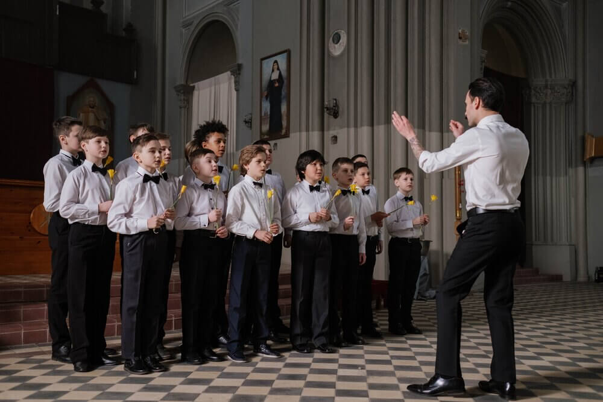

SONG LYRICS
We know that it is difficult to find the lyrics of the primary songs in one place, especially those that contain fun designs and drawings to attract the attention of children. That is why we have compiled some of the lyrics assigned for this year that we believe can be very useful.
>
General Questions
What are the responsibilities of a music director?
They plan, teach, and direct the music for Sharing Time, including the songs that will be part of the children's presentation in sacrament meeting. They help with music in nursery classes and other Primary classes as requested. They can organize and direct a children's choir, as requested.
Why is it important to keep the spirit when singing?
The melodies, words, and messages of Primary songs can teach children the doctrines of the gospel and remain in their hearts throughout their lives. But you need the Holy Spirit for this to happen.
How to get children's attention?
When the children's attention begins to decrease move on to something else. Close your singing time with a different activity or form of singing that you have previously used that day.